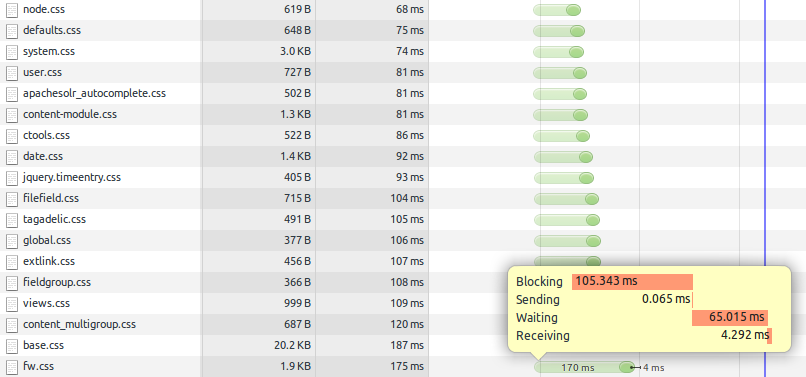
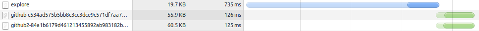
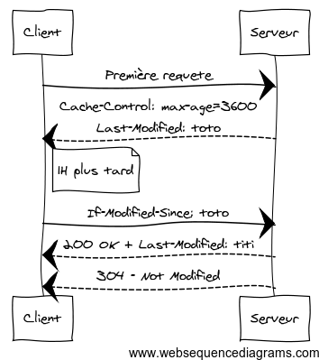

Les webperfs
pour les nuls
Timothée Carry
- Consultant Octo Technology
- Spécialiste en Web Front
- @pixelastic à l'extérieur
Pourquoi ?
On ne remarque pas quand c'est rapide,
mais on ressent quand c'est lent.
- Lenteur ressentie au bout de 4s en 2008, 3s en 2014
- Nouvelle génération habituée à l'instantané
- Explosion du nombre de terminaux mobiles
Sommaire
Serveur
Images
Javascript
CSS
Perception
Serveur
Concatenate
Compress
Cache
Concatenate
Télécharger moins de fichiers
france.fr

github.com

Goulot d'étranglement
- Latence DNS
- TCP Slow-start
- Overhead SSL
- Maximum de connections parallèlles
Compress
Télécharger des fichiers plus légers
GZIP : La formule magique
- Gain de 66% en moyenne
- Assets textuels : HTML, CSS, Javascript, XML, JSON
- Serveur : Apache, Lighttpd, Nginx, IIS
- Browser : IE5.5+
Apache
<IfModule mod_deflate.c>
<IfModule mod_filter.c>
AddOutputFilterByType DEFLATE "application/javascript" "application/json" \
"text/css" "text/html" "text/xml" [...]
</IfModule>
</IfModule>Lighttpd
server.modules += ( "mod_compress" )
compress.filetype = ("application/javascript", "application/json", \
"text/css", "text/html", "text/xml", [...] )nginx
gzip on;
gzip_types application/javascript application/json text/css text/html text/xml [...]; Minification
Spécifique à chaque langage
- Suppression
- Mutualisation
- Obfuscation
cleancss
main.css
apachesolr_autocomplete.message{font-size:80%;color:#888}.apachesolr_autocomplete.count{float:right}div.apachesolr_autocomplete.suggestion{display:inline;float:left}div.ac_results li{list-style:none;background-image:none!important}147Ko ⇒ 28Ko ⇒ 21Ko
uglifyjs
main.js
apachesolr_ajax={};apachesolr_ajax.finalize=function(settings){pm.maps();$("#tooltip").hide();pm.tooltips();pm.jScrollPane();pm.carousels();pm.datepicker();pm.chooseLanguage();pm.popins();$("#filters-nav li").find(".indicator").hide();$("#overlay").hide();$("#filters-nav li").removeClass("active");$(".item a").hover(function(){$(this).find(".short").addClass("accessibility")},function(){$(this).find(".short").removeClass("accessibility")})};428Ko ⇒ 128Ko ⇒ 102Ko
html-minifier
index.html
<body class=layout-home><div class=apachesolr_ajax></div><div id=content class=gradient-1><p id=access-keys><a href=#page>Allez au contenu</a> <a href=#nav>Allez à la navigation</a> <a href=#search>Allez à la recherche</a> <a href=#lang lang=en>Change language</a></p></div></body> 50Ko ⇒ 11Ko ⇒ 9.6Ko
Cache
Télécharger moins souvent
Fraicheur
- Date limite de consommation
- Rapide, pas de requete si encore frais
-
Deux headers
Expires: Thu, 04 May 2014 20:00:00 GMT✘Cache-Control: max-age=3600, must-revalidate✔
Validation
-
Vérification que le client possède la dernière version
- Oui : 304 - Not Modified
- Non: 200 - OK
- Évite téléchargement inutile
-
Deux couples de headers
Last-Modified: Mon, 04 May 2014 02:28:12 GMT/If-Modified-Since✔ETag: "3e86-410-3596fbbc"/If-None-Match✘
Un beau dessin

Invalidation
There are only two hard things in Computer Science: cache invalidation and naming things.
- Cache max (1 an)
-
Nouvelles urls (timestamp, hash, etc)
- github2-c9b5fd6520f5ab77dd823b1b2c81ff9c461b1374.css
- github-14e2a44e296739b8ec8d7763e88ed307a6d424e0.js
Images
Poids lourd de la page
- +50% du poids des pages (Alexa top 100 2013)
- 800Ko en moyenne (2.4Mo sur france.fr)
- Différents formats / usages
JPG
Deux compressions
155Ko
Lossless : suppression de metadatas
- Orientation, exposition, flash, focale, etc
- Date, coordonnées GPS
- Modèle, marque de l'appareil
- Aperçu, historique
- Tags, commentaires
exiftool
Color Space Data : RGB
Profile Date Time : 1998:02:09 06:49:00
Primary Platform : Microsoft Corporation
Device Manufacturer : IEC
Device Attributes : Reflective, Glossy, Positive, Color
Rendering Intent : Perceptual
Connection Space Illuminant : 0.9642 1 0.82491
Profile Creator : HP
Profile Copyright : Copyright (c) 1998 Hewlett-Packard Company
Red Matrix Column : 0.43607 0.22249 0.01392
Green Matrix Column : 0.38515 0.71687 0.09708
Blue Matrix Column : 0.14307 0.06061 0.7141
Device Mfg Desc : IEC http://www.iec.ch
Viewing Cond Illuminant Type : D50
Luminance : 76.03647 80 87.12462
Measurement Flare : 0.999%
Measurement Illuminant : D65
Technology : Cathode Ray Tube Display
Red Tone Reproduction Curve : (Binary data 2060 bytes, use -b option to extract)
Green Tone Reproduction Curve : (Binary data 2060 bytes, use -b option to extract)
Blue Tone Reproduction Curve : (Binary data 2060 bytes, use -b option to extract)jpegtran -optimize -copy none
155Ko ⇒ 152Ko
Lossy : suppression d'informations
- Moins de détails
- Limite de la perception humaine
- 80% acceptable en moyenne
152Ko
41Ko
jpegoptim -m80 --strip-all
Sprites
Concaténation d'images
Secret of Mana
On joue sur background-position en CSS
a {
display:block;
width:15px;
height:15px;
background:url(image.png) 0px 0px no-repeat;
}
a:hover {
background-position:0px -15px;
}grunt spritely, Compass, www.spritecow.com
Javascript
Chargement
Retarder jusqu'au bout
Téléchargement bloquant
<script>bloque le parsing- Mettre en bas de page, avant
</body> asyncsur scripts indépendants- Script1 charge script2 (pub, tracking, sharing)
Surpoids
Garder le minimum
Langage non compilé
- Code écrit = code téléchargé = code exécuté
- Utiliser les builds sur mesure (jQuery, Bootstrap, etc)
- microjs.com
CSS
Affichage
Les reflows sont lents
Repaints et Reflows
- Repaint : Changer la couleur des pixels
- Reflow : Changer les dimensions des éléments
- csstriggers.com
Limiter les reflows
- CSS en haut de page
- Insérer dans le DOM en batch
- Taille des images dans le HTML
border: 1px solid transparent
Parseur
Comment ça marche ?
Mode de fonctionnement
- Contre-intuitif
- Boucle sur tous les éléments
- Lecture de droite à gauche des sélecteurs
- Sélecteur clé (à droite) doit donc être le plus précis
Lecture de droite à gauche
<div id="header">
<h1>Company</h1>
<ul id="menu">
<li><a href="#">AAA</a></li>
<li><a href="#" class="menu-item">BBB</a></li>
</ul>
</div>
<div id="content">
<ul>
<li><a href="#">CCC</a></li>
<li><a href="#">DDD</a></li>
</ul>
</div>#header h1 { /* Bad key */
font-size:3rem;
}
ul#menu > li { /* overspecify. child ok */
float:left
}
#menu li a { /* Bad key, too broad */
background:red;
}
.menu-item { /* good */
background:green;
}
#content ul * { /* Arrghhhh */
display:block;
}Bonnes pratiques
- Utiliser des classes plutôt que des tags
- Pas plus de trois niveaux
- Pas de sélecteur universel
.menu * - Pas de regexp d'attribut
a[href^="http://"] - Lisibilité et maintenabilité du code avant tout
Perception
Progression
Afficher petit à petit
Un tiens vaut mieux que deux tu l'auras.
startRenderrapide- Affichage progressif (jpg, placeholders)
- Lazyloading
Tricher
Tout le monde le fait...
Faire illusion
- Feedback en avance (Instagram)
- Illusion d'optique (Gmail)
- Spinner plus rapide (Firefox)
- Spinner iOS (Facebook)
If at first you don't succeed, blame it on your parents